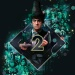
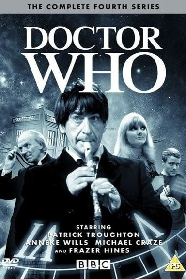
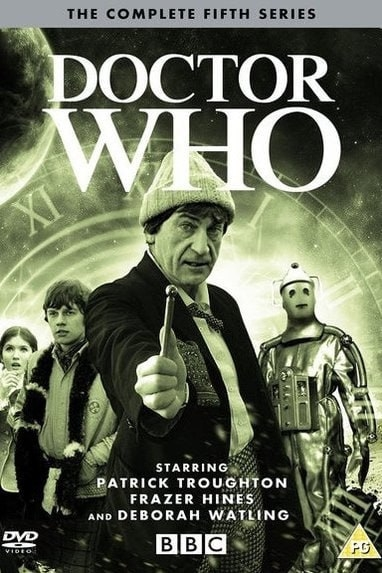
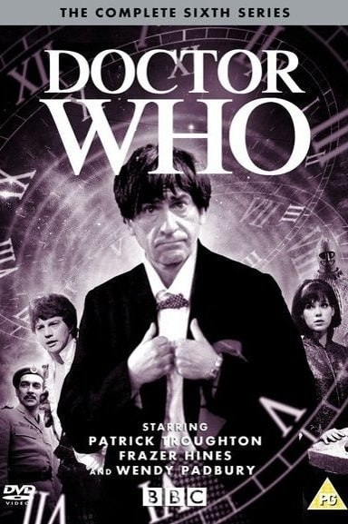

Таблица коллекции |  Навигация по канону |  Связные экранизации |
Таблица коллекции | Навигация по канону | Связные экранизации |



Эра Второго Доктора
Актёр: Патрик Траутон

С 3‑й по 9‑ю серию 4‑го сезона Второй Доктор с Беном и Полли противостоит далекам, киберлюдям и иным угрозам: от Атлантиды до колонии Макра. Сезон сплетает приключения с моральными дилеммами — Доктор не просто побеждает врагов, а заставляет их столкнуться с собственной сутью; кульминация в «Зле далеков» оборачивается горькой победой ценой утраты.
Варианты озвучек, подробности выхода и другие ссылки на просмотр в описаниях серийНаш плейлист сезона в ВК
Таблица сезонов и озвучек

Пятый сезон — расцвет Второго Доктора: с Джейми и Викторией (а позже Зои) он сталкивается с киберлюдьми в их гробнице, йети в тибетском монастыре и ледяными воинами из марсианских льдов. Сезон балансирует между хоррором и научной фантастикой, а смена спутниц — уход Виктории, приход Зои — освежает динамику команды. Кульминация — «Колесо в космосе»: киберлюди возвращаются, и Доктор доказывает, что интеллект сильнее грубой силы.
Варианты озвучек, подробности выхода и другие ссылки на просмотр в описаниях серий

Финал эры Второго Доктора: с Джейми и Зои он противостоит Доминаторам, киберлюдям, Ледяным воинам и иным угрозам. Сезон смешивает научную фантастику с почти сюрреалистичными испытаниями — вроде попадания в мир вымышленных героев, а «Военные игры» раскрывают тайну Повелителей Времени, которые обрывают путешествия Джейми и Зои и подводят Доктора к регенерации.
Варианты озвучек, подробности выхода и другие ссылки на просмотр в описаниях серий